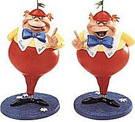

"I know what you're thinking about," said Tweedledum; "but it isn't so, nohow."
"Contrariwise," continued Tweedledee, "if it was so, it might be; and if it were so, it would be; but as it isn't, it ain't. That's logic."
"I'm sorry, could you help me out of this wood: it's getting dark!" you said.
"You've begun wrong!" cried Tweedledum. "The first thing in a visit is to say «How d'ye do?» and shake hands!"
And here the two brothers gave each other a hug, and then they held out the two hands that were free, to shake hands with you.
"We are now discussing the possibility of teaching Tweedle Numbers to everyone on the kingdom!" shouted Tweedledee.
"No, no, could you please just tell me the way out?" you cried. But they were already explaining how Tweedle numbers worked...
"It's easy, you see, since if it weren't so, it wouldn't be. That's
logic!" both of them said.
"And we only have a few rules" they said, starting to write on a board:
"Nohow. And thank you very much for asking about our numbers!", said Tweedledum.
"But I did not ask..." you said. Too late! "You like math? Funny! I'll give you examples" added Tweedledee.
"If N=6, K=3 and M=3" he said with a great smile "then we have this Tweedle numbers!".
| # | Tweedle Nr | # | Tweedle Nr | |
|---|---|---|---|---|
| 1 | 100011 | 5 | 110111 | |
| 2 | 100111 | 6 | 111001 | |
| 3 | 110001 | 7 | 111011 | |
| 4 | 110011 |
"Ditto, we can assign a single number for each Tweedle number, its id, if we see them in ascending order!" said Tweedledum.
"Ditto, ditto!" cried Tweedledee. "Why are you telling him that? He is not real!" shouted Tweedledee.
"I am real!" you responded in tears...
"I hope you don't suppose those are real tears?" Tweedledum interrupted in a tone of great contempt.
"Well, well, I can discover the id of a Tweedle number faster than you" Tweedledee said.
"Nohow! I'm very fast, generally," Tweedledum said on a low voice: "only today I happen to have a headache."
"And I've got a toothache!" said Tweedledee, who had overheard the remark. "Far worse than you, but I'm still faster."
"And you, how fast you are, you imaginary being?" they both said.
And you had no solution but to make a program to discover that... So many strange things happen in Wonderland!
Given a specific N, K and M, and a list of valid Tweedle Numbers, your task is to discover the number id that represent each number, this is, the position in which it appears if we take all the valid Tweedle Numbers for that parameters and sort them in ascending order of their binary representation.
The first line will contain exactly three integers: the parameters N, K and M, given exactly in that order. (1 ≤ N,M,K ≤ 33).
Then comes a line with a single integer T, saying how many Tweedle Numbers follow (1 ≤ T ≤ 20). Then there will be exactly T lines, each one containing a single Tweedle Number, represented as a sequence of zero or one digits. The numbers are valid in what respects to the parameters N,M and K.
You must output a single line for each Tweedle Number, giving it's number id. See the sample input and output, combined with the figure 1, to better understand what you need to do.
6 3 3 4 111011 100011 110011 100111
7 1 4 2
2005 Programming Contest of Porto University
Round 2, 28 of September of 2005
(Author: Pedro Ribeiro - DCC/FCUP)